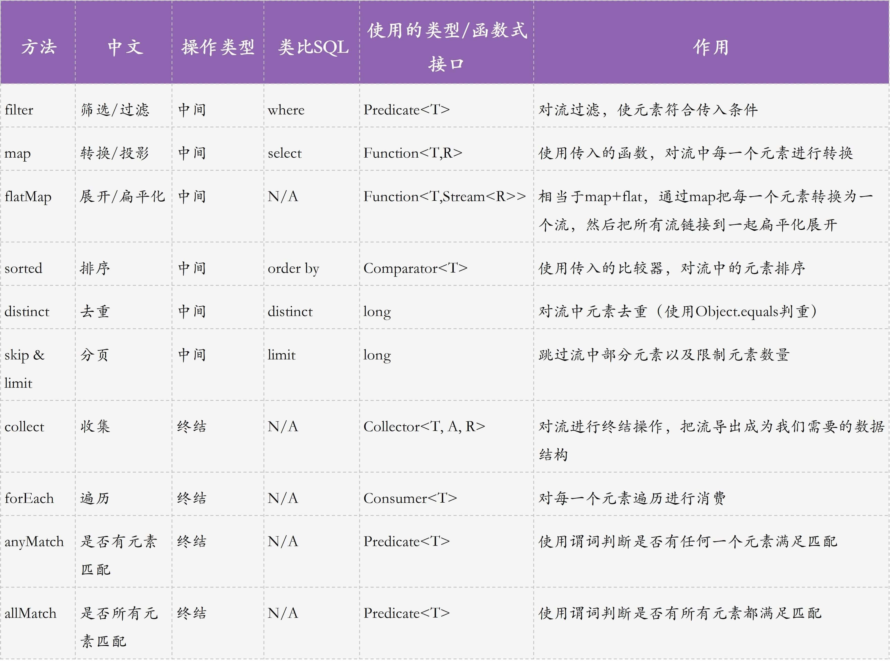
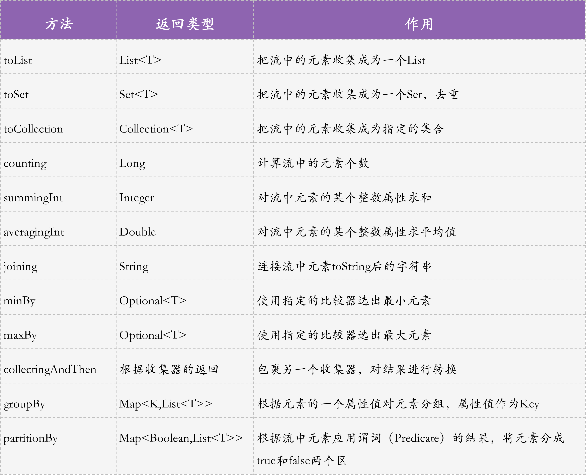

- 00 开篇词 业务代码真的会有这么多坑？.md.html
- 01 使用了并发工具类库，线程安全就高枕无忧了吗？.md.html
- 02 代码加锁：不要让“锁”事成为烦心事.md.html
- 03 线程池：业务代码最常用也最容易犯错的组件.md.html
- 04 连接池：别让连接池帮了倒忙.md.html
- 05 HTTP调用：你考虑到超时、重试、并发了吗？.md.html
- 06 2成的业务代码的Spring声明式事务，可能都没处理正确.md.html
- 07 数据库索引：索引并不是万能药.md.html
- 08 判等问题：程序里如何确定你就是你？.md.html
- 09 数值计算：注意精度、舍入和溢出问题.md.html
- 10 集合类：坑满地的List列表操作.md.html
- 11 空值处理：分不清楚的null和恼人的空指针.md.html
- 12 异常处理：别让自己在出问题的时候变为瞎子.md.html
- 13 日志：日志记录真没你想象的那么简单.md.html
- 14 文件IO：实现高效正确的文件读写并非易事.md.html
- 15 序列化：一来一回你还是原来的你吗？.md.html
- 16 用好Java 8的日期时间类，少踩一些“老三样”的坑.md.html
- 17 别以为“自动挡”就不可能出现OOM.md.html
- 18 当反射、注解和泛型遇到OOP时，会有哪些坑？.md.html
- 19 Spring框架：IoC和AOP是扩展的核心.md.html
- 20 Spring框架：框架帮我们做了很多工作也带来了复杂度.md.html
- 21 代码重复：搞定代码重复的三个绝招.md.html
- 22 接口设计：系统间对话的语言，一定要统一.md.html
- 23 缓存设计：缓存可以锦上添花也可以落井下石.md.html
- 24 业务代码写完，就意味着生产就绪了？.md.html
- 25 异步处理好用，但非常容易用错.md.html
- 26 数据存储：NoSQL与RDBMS如何取长补短、相辅相成？.md.html
- 27 数据源头：任何客户端的东西都不可信任.md.html
- 28 安全兜底：涉及钱时，必须考虑防刷、限量和防重.md.html
- 29 数据和代码：数据就是数据，代码就是代码.md.html
- 30 如何正确保存和传输敏感数据？.md.html
- 31 加餐1：带你吃透课程中Java 8的那些重要知识点（一）.md.html
- 32 加餐2：带你吃透课程中Java 8的那些重要知识点（二）.md.html
- 33 加餐3：定位应用问题，排错套路很重要.md.html
- 34 加餐4：分析定位Java问题，一定要用好这些工具（一）.md.html
- 35 加餐5：分析定位Java问题，一定要用好这些工具（二）.md.html
- 36 加餐6：这15年来，我是如何在工作中学习技术和英语的？.md.html
- 37 加餐7：程序员成长28计.md.html
- 38 加餐8：Java程序从虚拟机迁移到Kubernetes的一些坑.md.html
- 答疑篇：代码篇思考题集锦（一）.md.html
- 答疑篇：代码篇思考题集锦（三）.md.html
- 答疑篇：代码篇思考题集锦（二）.md.html
- 答疑篇：加餐篇思考题答案合集.md.html
- 答疑篇：安全篇思考题答案合集.md.html
- 答疑篇：设计篇思考题答案合集.md.html
- 结束语 写代码时，如何才能尽量避免踩坑？.md.html
32 加餐2：带你吃透课程中Java 8的那些重要知识点（二）
你好，我是朱晔。
上一讲的几个例子中，其实都涉及了 Stream API 的最基本使用方法。今天，我会与你详细介绍复杂、功能强大的 Stream API。
Stream 流式操作，用于对集合进行投影、转换、过滤、排序等，更进一步地，这些操作能链式串联在一起使用，类似于 SQL 语句，可以大大简化代码。可以说，Stream 操作是 Java 8 中最重要的内容，也是这个课程大部分代码都会用到的操作。
我先说明下，有些案例可能不太好理解，建议你对着代码逐一到源码中查看 Stream 操作的方法定义，以及 JDK 中的代码注释。
Stream 操作详解
为了方便你理解 Stream 的各种操作，以及后面的案例，我先把这节课涉及的 Stream 操作汇总到了一张图中。你可以先熟悉一下。

在接下来的讲述中，我会围绕订单场景，给出如何使用 Stream 的各种 API 完成订单的统计、搜索、查询等功能，和你一起学习 Stream 流式操作的各种方法。你可以结合代码中的注释理解案例，也可以自己运行源码观察输出。
我们先定义一个订单类、一个订单商品类和一个顾客类，用作后续 Demo 代码的数据结构：
//订单类
@Data
public class Order {
private Long id;
private Long customerId;//顾客ID
private String customerName;//顾客姓名
private List<OrderItem> orderItemList;//订单商品明细
private Double totalPrice;//总价格
private LocalDateTime placedAt;//下单时间
}
//订单商品类
@Data
@AllArgsConstructor
@NoArgsConstructor
public class OrderItem {
private Long productId;//商品ID
private String productName;//商品名称
private Double productPrice;//商品价格
private Integer productQuantity;//商品数量
}
//顾客类
@Data
@AllArgsConstructor
public class Customer {
private Long id;
private String name;//顾客姓名
}
在这里，我们有一个 orders 字段保存了一些模拟数据，类型是 List。这里，我就不贴出生成模拟数据的代码了。这不会影响你理解后面的代码，你也可以自己下载源码阅读。
创建流
要使用流，就要先创建流。创建流一般有五种方式：
通过 stream 方法把 List 或数组转换为流；
通过 Stream.of 方法直接传入多个元素构成一个流；
通过 Stream.iterate 方法使用迭代的方式构造一个无限流，然后使用 limit 限制流元素个数；
通过 Stream.generate 方法从外部传入一个提供元素的 Supplier 来构造无限流，然后使用 limit 限制流元素个数；
通过 IntStream 或 DoubleStream 构造基本类型的流。
//通过stream方法把List或数组转换为流
@Test
public void stream()
{
Arrays.asList("a1", "a2", "a3").stream().forEach(System.out::println);
Arrays.stream(new int[]{1, 2, 3}).forEach(System.out::println);
}
//通过Stream.of方法直接传入多个元素构成一个流
@Test
public void of()
{
String[] arr = {"a", "b", "c"};
Stream.of(arr).forEach(System.out::println);
Stream.of("a", "b", "c").forEach(System.out::println);
Stream.of(1, 2, "a").map(item -> item.getClass().getName()).forEach(System.out::println);
}
//通过Stream.iterate方法使用迭代的方式构造一个无限流，然后使用limit限制流元素个数
@Test
public void iterate()
{
Stream.iterate(2, item -> item * 2).limit(10).forEach(System.out::println);
Stream.iterate(BigInteger.ZERO, n -> n.add(BigInteger.TEN)).limit(10).forEach(System.out::println);
}
//通过Stream.generate方法从外部传入一个提供元素的Supplier来构造无限流，然后使用limit限制流元素个数
@Test
public void generate()
{
Stream.generate(() -> "test").limit(3).forEach(System.out::println);
Stream.generate(Math::random).limit(10).forEach(System.out::println);
}
//通过IntStream或DoubleStream构造基本类型的流
@Test
public void primitive()
{
//演示IntStream和DoubleStream
IntStream.range(1, 3).forEach(System.out::println);
IntStream.range(0, 3).mapToObj(i -> "x").forEach(System.out::println);
IntStream.rangeClosed(1, 3).forEach(System.out::println);
DoubleStream.of(1.1, 2.2, 3.3).forEach(System.out::println);
//各种转换，后面注释代表了输出结果
System.out.println(IntStream.of(1, 2).toArray().getClass()); //class [I
System.out.println(Stream.of(1, 2).mapToInt(Integer::intValue).toArray().getClass()); //class [I
System.out.println(IntStream.of(1, 2).boxed().toArray().getClass()); //class [Ljava.lang.Object;
System.out.println(IntStream.of(1, 2).asDoubleStream().toArray().getClass()); //class [D
System.out.println(IntStream.of(1, 2).asLongStream().toArray().getClass()); //class [J
//注意基本类型流和装箱后的流的区别
Arrays.asList("a", "b", "c").stream() // Stream<String>
.mapToInt(String::length) // IntStream
.asLongStream() // LongStream
.mapToDouble(x -> x / 10.0) // DoubleStream
.boxed() // Stream<Double>
.mapToLong(x -> 1L) // LongStream
.mapToObj(x -> "") // Stream<String>
.collect(Collectors.toList());
}
filter
filter 方法可以实现过滤操作，类似 SQL 中的 where。我们可以使用一行代码，通过 filter 方法实现查询所有订单中最近半年金额大于 40 的订单，通过连续叠加 filter 方法进行多次条件过滤：
//最近半年的金额大于40的订单
orders.stream()
.filter(Objects::nonNull) //过滤null值
.filter(order -> order.getPlacedAt().isAfter(LocalDateTime.now().minusMonths(6))) //最近半年的订单
.filter(order -> order.getTotalPrice() > 40) //金额大于40的订单
.forEach(System.out::println);
如果不使用 Stream 的话，必然需要一个中间集合来收集过滤后的结果，而且所有的过滤条件会堆积在一起，代码冗长且不易读。
map
map 操作可以做转换（或者说投影），类似 SQL 中的 select。为了对比，我用两种方式统计订单中所有商品的数量，前一种是通过两次遍历实现，后一种是通过两次 mapToLong+sum 方法实现：
//计算所有订单商品数量
//通过两次遍历实现
LongAdder longAdder = new LongAdder();
orders.stream().forEach(order ->
order.getOrderItemList().forEach(orderItem -> longAdder.add(orderItem.getProductQuantity())));
//使用两次mapToLong+sum方法实现
assertThat(longAdder.longValue(), is(orders.stream().mapToLong(order ->
order.getOrderItemList().stream()
.mapToLong(OrderItem::getProductQuantity).sum()).sum()));
显然，后一种方式无需中间变量 longAdder，更直观。
这里再补充一下，使用 for 循环生成数据，是我们平时常用的操作，也是这个课程会大量用到的。现在，我们可以用一行代码使用 IntStream 配合 mapToObj 替代 for 循环来生成数据，比如生成 10 个 Product 元素构成 List：
//把IntStream通过转换Stream<Project>
System.out.println(IntStream.rangeClosed(1,10)
.mapToObj(i->new Product((long)i, "product"+i, i*100.0))
.collect(toList()));
flatMap
接下来，我们看看 flatMap 展开或者叫扁平化操作，相当于 map+flat，通过 map 把每一个元素替换为一个流，然后展开这个流。
比如，我们要统计所有订单的总价格，可以有两种方式：
直接通过原始商品列表的商品个数 * 商品单价统计的话，可以先把订单通过 flatMap 展开成商品清单，也就是把 Order 替换为 Stream，然后对每一个 OrderItem 用 mapToDouble 转换获得商品总价，最后进行一次 sum 求和；
利用 flatMapToDouble 方法把列表中每一项展开替换为一个 DoubleStream，也就是直接把每一个订单转换为每一个商品的总价，然后求和。
//直接展开订单商品进行价格统计
System.out.println(orders.stream()
.flatMap(order -> order.getOrderItemList().stream())
.mapToDouble(item -> item.getProductQuantity() * item.getProductPrice()).sum());
//另一种方式flatMap+mapToDouble=flatMapToDouble
System.out.println(orders.stream()
.flatMapToDouble(order ->
order.getOrderItemList()
.stream().mapToDouble(item -> item.getProductQuantity() * item.getProductPrice()))
.sum());
这两种方式可以得到相同的结果，并无本质区别。
sorted
sorted 操作可以用于行内排序的场景，类似 SQL 中的 order by。比如，要实现大于 50 元订单的按价格倒序取前 5，可以通过 Order::getTotalPrice 方法引用直接指定需要排序的依据字段，通过 reversed() 实现倒序：
//大于50的订单,按照订单价格倒序前5
orders.stream().filter(order -> order.getTotalPrice() > 50)
.sorted(comparing(Order::getTotalPrice).reversed())
.limit(5)
.forEach(System.out::println);
distinct
distinct 操作的作用是去重，类似 SQL 中的 distinct。比如下面的代码实现：
查询去重后的下单用户。使用 map 从订单提取出购买用户，然后使用 distinct 去重。
查询购买过的商品名。使用 flatMap+map 提取出订单中所有的商品名，然后使用 distinct 去重。
//去重的下单用户
System.out.println(orders.stream().map(order -> order.getCustomerName()).distinct().collect(joining(",")));
//所有购买过的商品
System.out.println(orders.stream()
.flatMap(order -> order.getOrderItemList().stream())
.map(OrderItem::getProductName)
.distinct().collect(joining(",")));
skip & limit
skip 和 limit 操作用于分页，类似 MySQL 中的 limit。其中，skip 实现跳过一定的项，limit 用于限制项总数。比如下面的两段代码：
按照下单时间排序，查询前 2 个订单的顾客姓名和下单时间；
按照下单时间排序，查询第 3 和第 4 个订单的顾客姓名和下单时间。
//按照下单时间排序，查询前2个订单的顾客姓名和下单时间
orders.stream()
.sorted(comparing(Order::getPlacedAt))
.map(order -> order.getCustomerName() + "@" + order.getPlacedAt())
.limit(2).forEach(System.out::println);
//按照下单时间排序，查询第3和第4个订单的顾客姓名和下单时间
orders.stream()
.sorted(comparing(Order::getPlacedAt))
.map(order -> order.getCustomerName() + "@" + order.getPlacedAt())
.skip(2).limit(2).forEach(System.out::println);
collect
collect 是收集操作，对流进行终结（终止）操作，把流导出为我们需要的数据结构。“终结”是指，导出后，无法再串联使用其他中间操作，比如 filter、map、flatmap、sorted、distinct、limit、skip。
在 Stream 操作中，collect 是最复杂的终结操作，比较简单的终结操作还有 forEach、toArray、min、max、count、anyMatch 等，我就不再展开了，你可以查询JDK 文档，搜索 terminal operation 或 intermediate operation。
接下来，我通过 6 个案例，来演示下几种比较常用的 collect 操作：
第一个案例，实现了字符串拼接操作，生成一定位数的随机字符串。
第二个案例，通过 Collectors.toSet 静态方法收集为 Set 去重，得到去重后的下单用户，再通过 Collectors.joining 静态方法实现字符串拼接。
第三个案例，通过 Collectors.toCollection 静态方法获得指定类型的集合，比如把 List转换为 LinkedList。
第四个案例，通过 Collectors.toMap 静态方法将对象快速转换为 Map，Key 是订单 ID、Value 是下单用户名。
第五个案例，通过 Collectors.toMap 静态方法将对象转换为 Map。Key 是下单用户名，Value 是下单时间，一个用户可能多次下单，所以直接在这里进行了合并，只获取最近一次的下单时间。
第六个案例，使用 Collectors.summingInt 方法对商品数量求和，再使用 Collectors.averagingInt 方法对结果求平均值，以统计所有订单平均购买的商品数量。
//生成一定位数的随机字符串
System.out.println(random.ints(48, 122)
.filter(i -> (i < 57 || i > 65) && (i < 90 || i > 97))
.mapToObj(i -> (char) i)
.limit(20)
.collect(StringBuilder::new, StringBuilder::append, StringBuilder::append)
.toString());
//所有下单的用户，使用toSet去重后实现字符串拼接
System.out.println(orders.stream()
.map(order -> order.getCustomerName()).collect(toSet())
.stream().collect(joining(",", "[", "]")));
//用toCollection收集器指定集合类型
System.out.println(orders.stream().limit(2).collect(toCollection(LinkedList::new)).getClass());
//使用toMap获取订单ID+下单用户名的Map
orders.stream()
.collect(toMap(Order::getId, Order::getCustomerName))
.entrySet().forEach(System.out::println);
//使用toMap获取下单用户名+最近一次下单时间的Map
orders.stream()
.collect(toMap(Order::getCustomerName, Order::getPlacedAt, (x, y) -> x.isAfter(y) ? x : y))
.entrySet().forEach(System.out::println);
//订单平均购买的商品数量
System.out.println(orders.stream().collect(averagingInt(order ->
order.getOrderItemList().stream()
.collect(summingInt(OrderItem::getProductQuantity)))));
可以看到，这 6 个操作使用 Stream 方式一行代码就可以实现，但使用非 Stream 方式实现的话，都需要几行甚至十几行代码。
有关 Collectors 类的一些常用静态方法，我总结到了一张图中，你可以再整理一下思路：

其中，groupBy 和 partitionBy 比较复杂，我和你举例介绍。
groupBy
groupBy 是分组统计操作，类似 SQL 中的 group by 子句。它和后面介绍的 partitioningBy 都是特殊的收集器，同样也是终结操作。分组操作比较复杂，为帮你理解得更透彻，我准备了 8 个案例：
第一个案例，按照用户名分组，使用 Collectors.counting 方法统计每个人的下单数量，再按照下单数量倒序输出。
第二个案例，按照用户名分组，使用 Collectors.summingDouble 方法统计订单总金额，再按总金额倒序输出。
第三个案例，按照用户名分组，使用两次 Collectors.summingInt 方法统计商品采购数量，再按总数量倒序输出。
第四个案例，统计被采购最多的商品。先通过 flatMap 把订单转换为商品，然后把商品名作为 Key、Collectors.summingInt 作为 Value 分组统计采购数量，再按 Value 倒序获取第一个 Entry，最后查询 Key 就得到了售出最多的商品。
第五个案例，同样统计采购最多的商品。相比第四个案例排序 Map 的方式，这次直接使用 Collectors.maxBy 收集器获得最大的 Entry。
第六个案例，按照用户名分组，统计用户下的金额最高的订单。Key 是用户名，Value 是 Order，直接通过 Collectors.maxBy 方法拿到金额最高的订单，然后通过 collectingAndThen 实现 Optional.get 的内容提取，最后遍历 Key/Value 即可。
第七个案例，根据下单年月分组统计订单 ID 列表。Key 是格式化成年月后的下单时间，Value 直接通过 Collectors.mapping 方法进行了转换，把订单列表转换为订单 ID 构成的 List。
第八个案例，根据下单年月 + 用户名两次分组统计订单 ID 列表，相比上一个案例多了一次分组操作，第二次分组是按照用户名进行分组。
//按照用户名分组，统计下单数量
System.out.println(orders.stream().collect(groupingBy(Order::getCustomerName, counting()))
.entrySet().stream().sorted(Map.Entry.<String, Long>comparingByValue().reversed()).collect(toList()));
//按照用户名分组，统计订单总金额
System.out.println(orders.stream().collect(groupingBy(Order::getCustomerName, summingDouble(Order::getTotalPrice)))
.entrySet().stream().sorted(Map.Entry.<String, Double>comparingByValue().reversed()).collect(toList()));
//按照用户名分组，统计商品采购数量
System.out.println(orders.stream().collect(groupingBy(Order::getCustomerName,
summingInt(order -> order.getOrderItemList().stream()
.collect(summingInt(OrderItem::getProductQuantity)))))
.entrySet().stream().sorted(Map.Entry.<String, Integer>comparingByValue().reversed()).collect(toList()));
//统计最受欢迎的商品，倒序后取第一个
orders.stream()
.flatMap(order -> order.getOrderItemList().stream())
.collect(groupingBy(OrderItem::getProductName, summingInt(OrderItem::getProductQuantity)))
.entrySet().stream()
.sorted(Map.Entry.<String, Integer>comparingByValue().reversed())
.map(Map.Entry::getKey)
.findFirst()
.ifPresent(System.out::println);
//统计最受欢迎的商品的另一种方式，直接利用maxBy
orders.stream()
.flatMap(order -> order.getOrderItemList().stream())
.collect(groupingBy(OrderItem::getProductName, summingInt(OrderItem::getProductQuantity)))
.entrySet().stream()
.collect(maxBy(Map.Entry.comparingByValue()))
.map(Map.Entry::getKey)
.ifPresent(System.out::println);
//按照用户名分组，选用户下的总金额最大的订单
orders.stream().collect(groupingBy(Order::getCustomerName, collectingAndThen(maxBy(comparingDouble(Order::getTotalPrice)), Optional::get)))
.forEach((k, v) -> System.out.println(k + "#" + v.getTotalPrice() + "@" + v.getPlacedAt()));
//根据下单年月分组，统计订单ID列表
System.out.println(orders.stream().collect
(groupingBy(order -> order.getPlacedAt().format(DateTimeFormatter.ofPattern("yyyyMM")),
mapping(order -> order.getId(), toList()))));
//根据下单年月+用户名两次分组，统计订单ID列表
System.out.println(orders.stream().collect
(groupingBy(order -> order.getPlacedAt().format(DateTimeFormatter.ofPattern("yyyyMM")),
groupingBy(order -> order.getCustomerName(),
mapping(order -> order.getId(), toList())))));
如果不借助 Stream 转换为普通的 Java 代码，实现这些复杂的操作可能需要几十行代码。
partitionBy
partitioningBy 用于分区，分区是特殊的分组，只有 true 和 false 两组。比如，我们把用户按照是否下单进行分区，给 partitioningBy 方法传入一个 Predicate 作为数据分区的区分，输出是 Map<Boolean, List
public static <T> Collector<T, ?, Map<Boolean, List<T>>> partitioningBy(Predicate<? super T> predicate) {
return partitioningBy(predicate, toList());
}
测试一下，partitioningBy 配合 anyMatch，可以把用户分为下过订单和没下过订单两组：
//根据是否有下单记录进行分区
System.out.println(Customer.getData().stream().collect(
partitioningBy(customer -> orders.stream().mapToLong(Order::getCustomerId)
.anyMatch(id -> id == customer.getId()))));
重点回顾
今天，我用了大量的篇幅和案例，和你展开介绍了 Stream 中很多具体的流式操作方法。有些案例可能不太好理解，我建议你对着代码逐一到源码中查看这些操作的方法定义，以及 JDK 中的代码注释。
最后，我建议你思考下，在日常工作中还会使用 SQL 统计哪些信息，这些 SQL 是否也可以用 Stream 来改写呢？Stream 的 API 博大精深，但其中又有规律可循。这其中的规律主要就是，理清楚这些 API 传参的函数式接口定义，就能搞明白到底是需要我们提供数据、消费数据、还是转换数据等。那，掌握 Stream 的方法便是，多测试多练习，以强化记忆、加深理解。
今天用到的代码，我都放在了 GitHub 上，你可以点击这个链接查看。
思考与讨论
使用 Stream 可以非常方便地对 List 做各种操作，那有没有什么办法可以实现在整个过程中观察数据变化呢？比如，我们进行 filter+map 操作，如何观察 filter 后 map 的原始数据呢？
Collectors 类提供了很多现成的收集器，那我们有没有办法实现自定义的收集器呢？比如，实现一个 MostPopularCollector，来得到 List 中出现次数最多的元素，满足下面两个测试用例：
assertThat(Stream.of(1, 1, 2, 2, 2, 3, 4, 5, 5).collect(new MostPopularCollector<>()).get(), is(2));
assertThat(Stream.of('a', 'b', 'c', 'c', 'c', 'd').collect(new MostPopularCollector<>()).get(), is('c'));
关于 Java 8，你还有什么使用心得吗？我是朱晔，欢迎在评论区与我留言分享你的想法，也欢迎你把这篇文章分享给你的朋友或同事，一起交流。